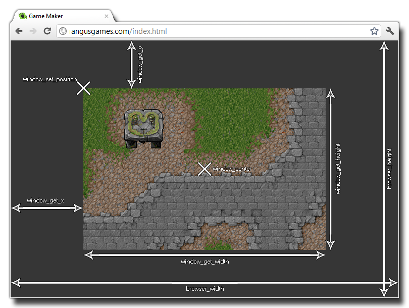

browser_width
返回： 实数
这个变量存储着浏览器显示区域的宽度/像素，如果运行平台不是浏览器，则返回窗口的宽度。下图说明了这个变量涉及的用途，图中剩余的变量可参考 Window
Functions.

if browser_height > window_get_height() ||
browser_width > window_get_width()
{
var xx, yy;
if browser_width > window_get_width()
{
xx = (browser_width -
window_get_width()) / 2;
}
else
{
xx = 0;
}
if browser_height > window_get_height()
{
yy = (browser_height -
window_get_height()) / 2;
}
else
{
yy = 0;
}
window_set_position(xx, yy);
}
上面的脚本，进行了浏览器与游戏窗口大小规格的比较，并改变游戏窗口位于浏览器中的位置
| Converted from CHM to HTML with chm2web Pro 2.85 (unicode) |